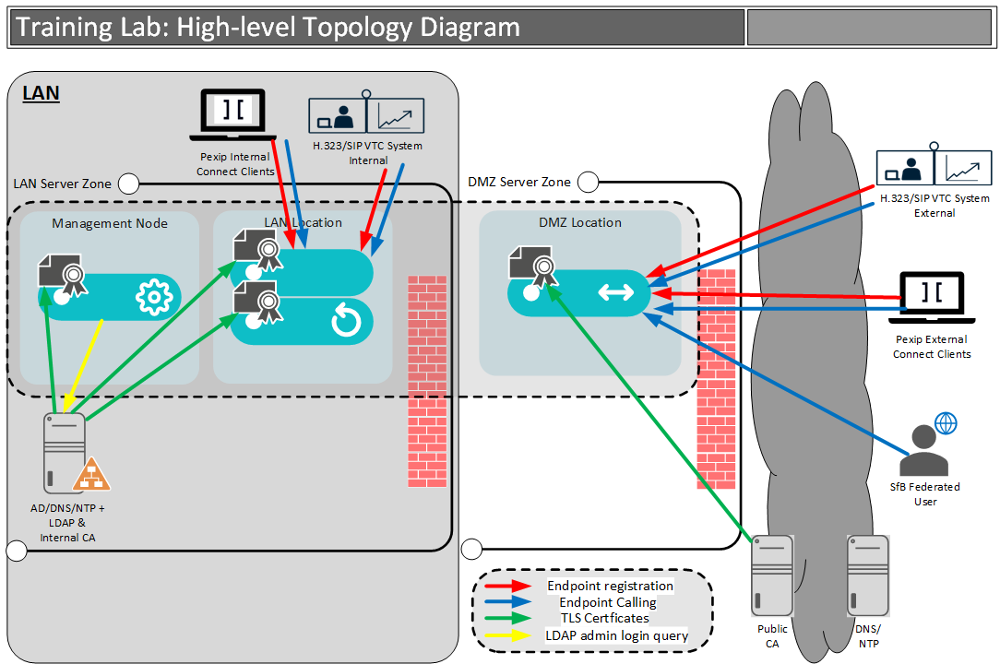

Congratulations on making it this far 👏. By now, you will have completed the essential steps required to plan, design, deploy and configure a basic Infinity system. However, we left a couple of things out of the previous lab that will stop your deployment from fully functioning.
This lab is the second of two in the CTA Level 1 path. The primary goal of this lab is to show you the next few steps to complete your Infinity deployment and, at the same time, look a little deeper at some of the other fundamental Infinity services. To get your deployment fully functioning and prepped for what lies ahead, you will need to secure the platform with TLS certificates and enable an enterprise-friendly administration login through LDAP.
We have modified the topology diagram to add a public CA certificate server, which will be used to issue the TLS certificate applied to the edge node, and show that devices will register to and call into the Infinity deployment. In addition, you will create internal TLS certificates using the pre-existing Windows Domain Controller that includes Active Directory Certificate Services (ADCS). Also, note the inclusion of a Skype for Business federated client added to the public internet. You will be able to place a call from any external Skype for Business system that supports open federation once your external TLS certificate is in place and correctly configured.

As before, this lab guide is broken into tasks, and each task has two main components (most of the time):
Each task has a “step-by-step” set of instructions to help you complete the required configurations and testing. This tells you “What" to do, but not "Why" you are doing it.
At the top of each page, there is usually a “More Info” button. You should take time to read this descriptive text that pops up when you click this button as it provides background information to the lab exercises, along with why you might deploy, configure and administer Infinity in the way we suggest.
As an additional challenge, users that have previous experience with Pexip could attempt to deploy and configure Pexip using the information in this section alone (i.e. do NOT follow the step-by-step guide üò±).
As an accompaniment to the lab guide, there is a lab sheet containing all the necessary details (such as IP addresses, FQDNs, etc.) that you will use to configure your deployment. At the top of each task in the lab guide, there is usually a paragraph outlining the lab sheet section that relates to the task.
Each task refers to the relevant lab sheet section if required. For your information, we have tried to keep the usernames consistent and passwords simple, with most passwords set to a common value that you can see in the lab sheet.
Please refer continuously to https://docs.pexip.com, our official technical documentation site for Pexip Infinity. In addition, we will provide you with links in each section to various documentation pages where appropriate.